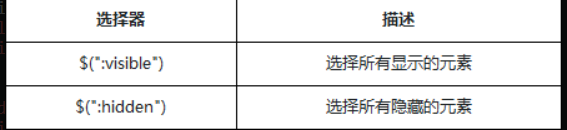

Jquery
jQuery是一个JavaScript函数库。
1. Jquery 的引用：
<head> <script src="https://cdn.bootcss.com/jquery/3.3.1/jquery.min.js"> </script> <!--这里使用的是在线的jquery库--> </head>
2.jQuery对象（很像数组对象）与DOM对象的相互转化：
1.jqery对象转化为DOM对象：
1.利用数组下标的方式读取到jQuery中的DOM对象
HTML代码
<div>元素一</div> <div>元素二</div> <div>元素三</div>
JavaScript代码
var $div = $('div') // 用jQuery找到所有的div元素（3个），为数组结构 var div = $div[0] // 通过数组下标索引，获取数组中的第一个div元素，返回DOM对象 div.style.color = 'red' //操作dom对象的属性
2.通过jQuery自带的get()方法
jQuery对象自身提供一个.get() 方法允许我们直接访问jQuery对象中相关的DOM节点，get方法中提供一个元素的索引：
var $div = $('div') //获取jQuery对象，为数组结构 var div = $div.get(0) //通过get方法，把第一个div元素转化成DOM对象 div.style.color = 'red' //操作dom对象的属性
2.DOM对象转换为Jquery对象：
var a = $(被转换的dom对象); //将普通的dom对象加工成jQuery对象a
HTML代码
<div>元素一</div> <div>元素二</div> <div>元素三</div>
JavaScript代码
var div = document.getElementsByTagName('div'); //获取dom对象数组 var $div = $(div); //把DOM对象转换为jQuery对象 var $first = $div.first(); //first方法找到第一个div元素 $first.css('color', 'red'); //给第一个元素设置颜色
3.选择器：
1.id选择器:
id选择器：一个用来查找标签的ID，即元素的id属性
$( "#id" );
2.类选择器：
类选择器，顾名思义，通过class样式类名来获取节点
$( ".class" );
3.元素选择器：
元素选择器：根据给定（html）标记名称选择所有的元素，有原生方法getElementsByTagName()函数支持
$( "element" );
搜索指定元素标签名的所有节点，这个是一个合集的操作，产生数组对象。
4.全（*）选择器：
jQuery中我们也可以通过传递*选择器来选中文档页面中的元素
$( "*" ); //使用document.getElementsByTagName()中传递"*"同样可以做到
5.层级选择器：
把文档树当作一个家谱，那么节点与节点直接就会存在父子，兄弟，祖孙的关系了。
通过一个列表，对比层级选择器的区别

6.筛选选择器：
jQuery提供了一系列的筛选选择器用来更快捷的找到所需的DOM元素。
筛选选择器很多都不是CSS的规范，而是jQuery自己为了开发者的便利延展出来的选择器。
筛选选择器的用法与CSS中的伪元素相似，选择器用冒号“：”开头.
1.基本筛选器的描述：

注意事项：
:eq(), :lt(), :gt(), :even, :odd 用来筛选他们前面的匹配表达式的集合元素，根据之前匹配的元素在进一步筛选，注意jQuery合集都是从0开始索引.
gt是一个段落筛选，从指定索引的下一个开始，gt(1) 实际从2开始.
2.内容筛选选择器
通过内容来过滤，jQuery也提供了一组内容筛选选择器，当然其规则也会体现在它所包含的子元素或者文本内容上

注意事项：
:contains与:has都有查找的意思，但是contains查找包含“指定文本”的元素，has查找包含“指定元素”的元素
如果:contains匹配的文本包含在元素的子元素中，同样认为是符合条件的。
:parent与:empty是相反的，两者所涉及的子元素，包括文本节点
3.可见性筛选选择器:
元素有显示状态与隐藏状态，jQuery根据元素的状态扩展了可见性筛选选择器:visible与:hidden.

:hidden选择器，不仅仅包含样式是display="none"的元素，还包括隐藏表单、visibility等等
隐藏一个元素的几种方式：
- CSS display的值是none。
- type="hidden"的表单元素。
- 宽度和高度都显式设置为0。
- 一个祖先元素是隐藏的，该元素是不会在页面上显示
- CSS visibility的值是hidden
- CSS opacity的指是0
4.属性筛选选择器
属性选择器让你可以基于属性来定位一个元素。可以只指定该元素的某个属性，

注意：
-
[attr="value"]能帮我们定位不同类型的元素，特别是表单form元素的操作，比如说input[type="text"],input[type="checkbox"]等
-
[attr*="value"]能在网站中帮助我们匹配不同类型的文件
5.表单元素选择器
jQuery中专门加入了表单选择器，从而能够极其方便地获取到某个类型的表单元素

注意事项：
除了input筛选选择器，几乎每个表单类别筛选器都对应一个input元素的type值。大部分表单类别筛选器可以使用属性筛选器替换。比如 $(':password') == $('[type=password]')
6.表单元素选择器
主要功能是对所选择的表单元素进行筛选.

注意事项：
选择器适用于复选框和单选框，对于下拉框元素, 使用 :selected 选择器
在某些浏览器中，选择器:checked可能会错误选取到